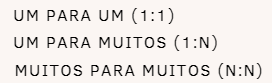

Entidades: Representam objetos ou conceitos do mundo real que têm uma existência independente. Cada entidade possui atributos, que são características ou propriedades (por exemplo, um "Cliente" pode ter atributos como Nome, Endereço e Telefone).
Atributos: São as propriedades que descrevem uma entidade. Podem ser simples (um único valor), compostos (vários valores) ou deriváveis (calculados a partir de outros atributos).
Relações: Representam como as entidades se conectam umas às outras. Por exemplo, um "Cliente" pode estar associado a uma "Compra". As relações podem ter cardinalidades, que definem o número de instâncias de uma entidade que podem estar associadas a outra (por exemplo, um cliente pode fazer várias compras).
Cardinalidade: Refere-se à quantidade de instâncias que podem se relacionar. As
cardinalidades comuns incluem:

Um-para-Um (1:1): Os relacionamentos 1:1 garantem que cada instância de entidade tenha no máximo uma associação correspondente.
Um-para-Muitos (1:N): Um relacionamento 1:N significa que cada instância de uma entidade se relaciona com muitas instâncias de outra entidade.
Muitos-para-Muitos (N:N): Um relacionamento N:N significa que muitas instâncias de ambas as entidades se relacionam umas com as outras.
Diagrama ER: A representação gráfica do modelo, onde as entidades são representadas por retângulos, os atributos por elipses e as relações por losangos.